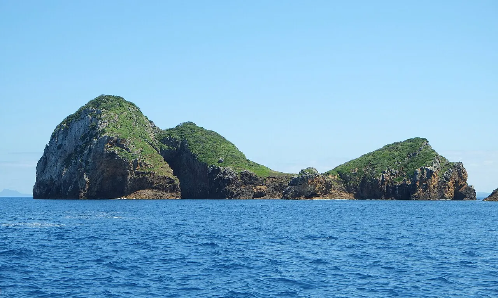

Poor Knights
Northland, Nouvelle-Zélande · plongée, snorkeling

Îles volcaniques en réserve marine, classées parmi les dix meilleures plongées du monde par Cousteau. Arches et grottes géantes.
- Lieu
- Northland, Nouvelle-Zélande
- Niveau
- Intermédiaire
- Activités
- plongée, snorkeling
- Type d'eau
- Mer / océan
- Coordonnées
- -35.47, 174.73 (position approximative du secteur)
Dangers à connaître
- Houle au large.
- Débarquement interdit.
Le conseil d'Ocean Buddy
Accès uniquement en bateau depuis Tutukaka.
Ouvrir dans Ocean Buddy Télécharger sur l'App Store
Source : Fiche Ocean Buddy · septembre 2026 · à vérifier localement.